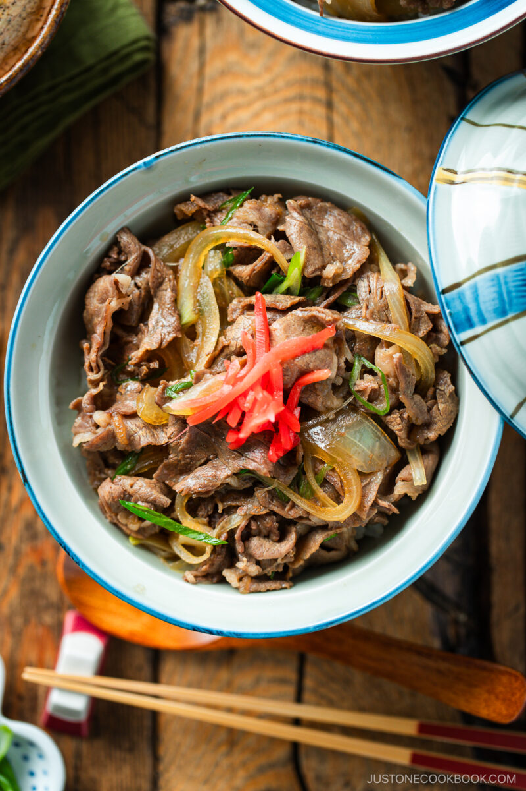

Gyudon Recipe

Description
This is a Japanese beef bowl that uses thin beef as the main source of the protein.
This recipe is taken from Just One Cookbook webpage.
Ingredients
- Thinly sliced beef.
- Onion.
- Scallion.
- Cooked rice.
- Pickled red ginger.
- Dashi.
- Sake.
- Soy sauce.
- Mirin.
- Sugar.
Steps
- slice the meat into pieces 3 inches (7.6 cm) wide.
- thinly slice the onion and green onion/scallion.
- to a large frying pan (do not turn on the heat yet), add the dashi, sake, mirin, soy sauce, and sugar. Stir to combine.
- scatter the onion slices into the sauce around the pan, separating the layers. Next, place the meat on top, separating the thin slices of beef so the meat covers the onions.
- cover the pan with a lid and turn on the heat. Start cooking over medium heat. Once simmering, turn down the heat and cook, covered, for 3–4 minutes.
- ladle over a bowl of hot steamed rice. Sprinkle the green onions on top and cook covered for another minute. Serve the steamed rice in large donburi bowls and spoon the beef and onions on top. Drizzle with some of the dashi broth and top with red pickled ginger. Serve immediately.
Home